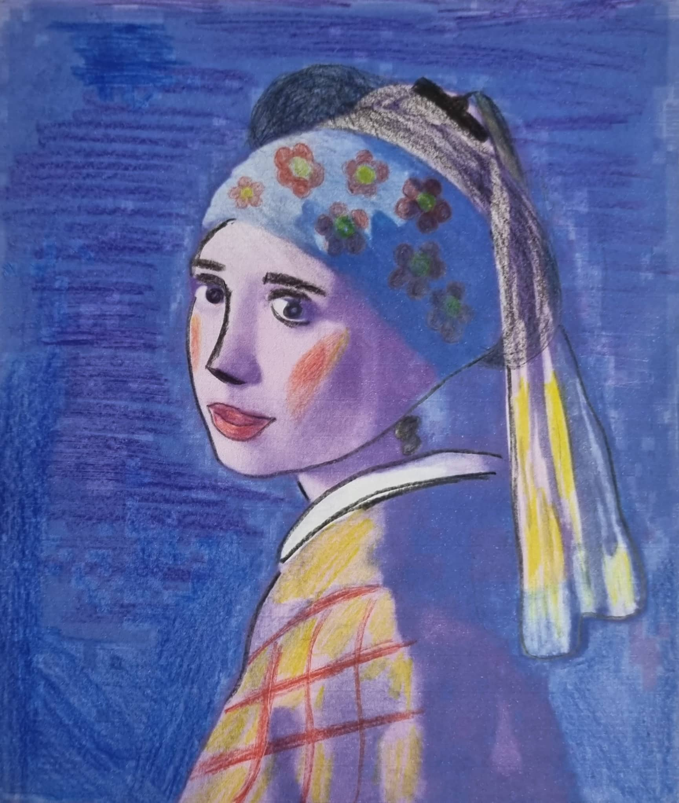
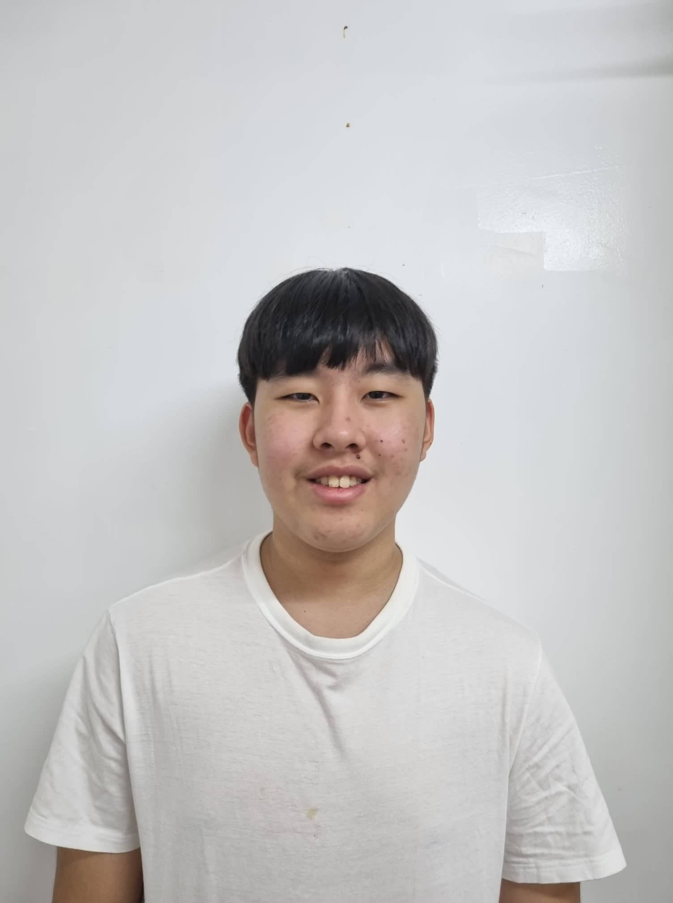

"Women need make-up and fine clothes for two reasons: seduction and camouflage. With make-up, negative emotions like dread and insecurity are covered up, whereas emotions like feeling more attractive and confident are enhanced by nice clothes."
-Won Hwang

Won Hwang is a student of Ateneo de Davao University.
He is one of the foreign students of Grade 9 Canisius. He is Korean. He is assigned in the making of the MAPEH web page. He is friendly to his classmates
and joins in fun activities in the classroom. He is part of the Wellness Club.